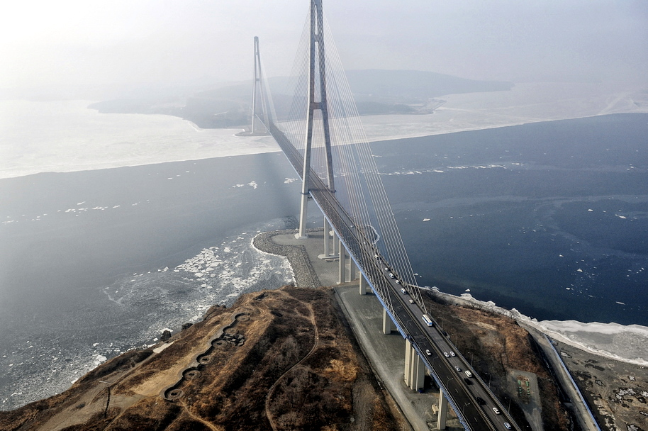

Russia: Bridge between Europe and Asia
With an area, two hundred times the size of Austria, the most important united states of America within the globe stretches over continents. With contrasting landscapes in unique weather zones and time zones, Russia paperwork the bridge between Europe and Asia. The ÖBB Rail Cargo Group also connects West European monetary centers with international locations in South/South-Japanese Europe and the Asian area with its web page in Russia.
 Russia BridgeThe massive region of Russia encompasses each climate region except the tropics. Moscow is both the capital of this flexible country and the largest city in Europe. The Kremlin in Moscow is the seat of the President and, along with Red Square, is a UNESCO World Heritage Site. The Russian multi-ethnic state is one of the most crucial economies in the global and possesses an inexhaustible abundance of raw substances and mineral assets. The economy is consequently closely dependent on the export of these uncooked substances. Oil and gasoline account for extra than 80% of exports, followed by using chemical compounds, wood, and grain. In addition, Russia performs a main position in the production of metal and aluminum. The maximum vast imports encompass gadgets, machinery, plant, and cars.
The railway market in Russia
Russia has the 1/3 largest rail community in the world with a total period of around eighty-five,500 km because the maximum crucial mode of transport is still with the aid of rail. The liberalization of the railway marketplace led to the established order of the kingdom-owned railway business enterprise Rossijskije schelesnyje dorogi (RZD) in 2003. In latest years, eighty-five private railway businesses have additionally been providing railway transportation offerings in Russia. These groups personal approximately 30% of all Russian freight wagons. According to the federal enterprise's personal information, the Russian railway institution’s proportion within the total managing of products in us of a fell from 78.2% (2003) to thirteen.6% (2016).